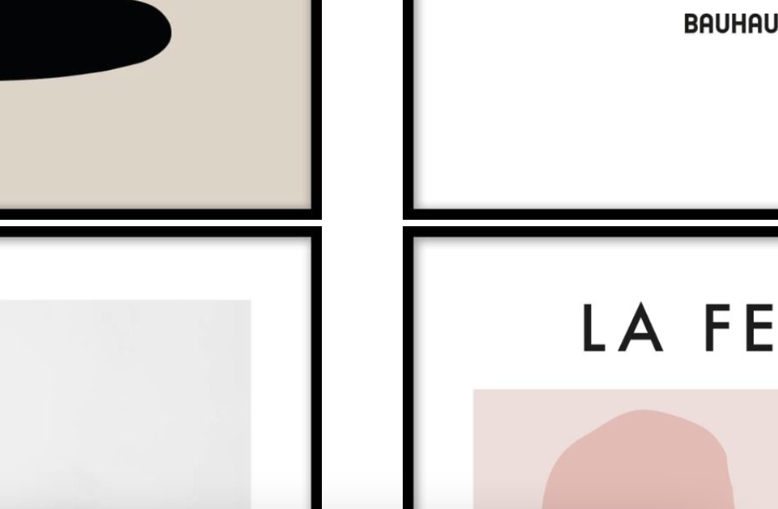
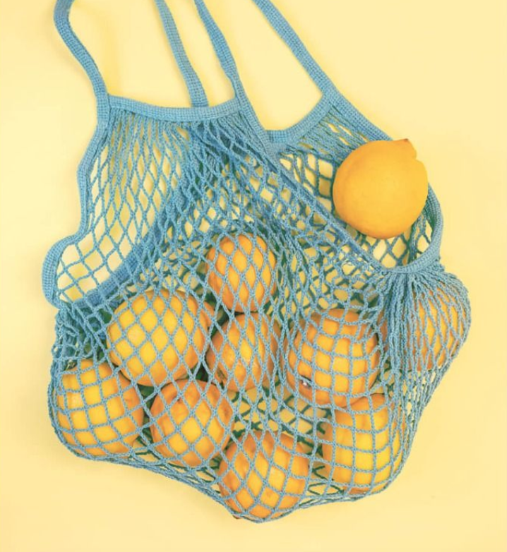
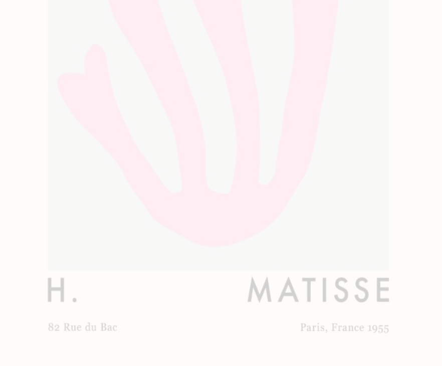

Det här projektet ingick också i övningarna för CSS Grid, men också övning på hover-effekter på bilder bland annat. Hos originalet är även bilderna klickbara, något som var perfekt att öva på inför skapandet av vår egen portfolio-startsida. Här har navigationsmenyn en "sticky" effekt på vänster sida vid scroll. Bilderna är även en del av en flexbox-layout.


